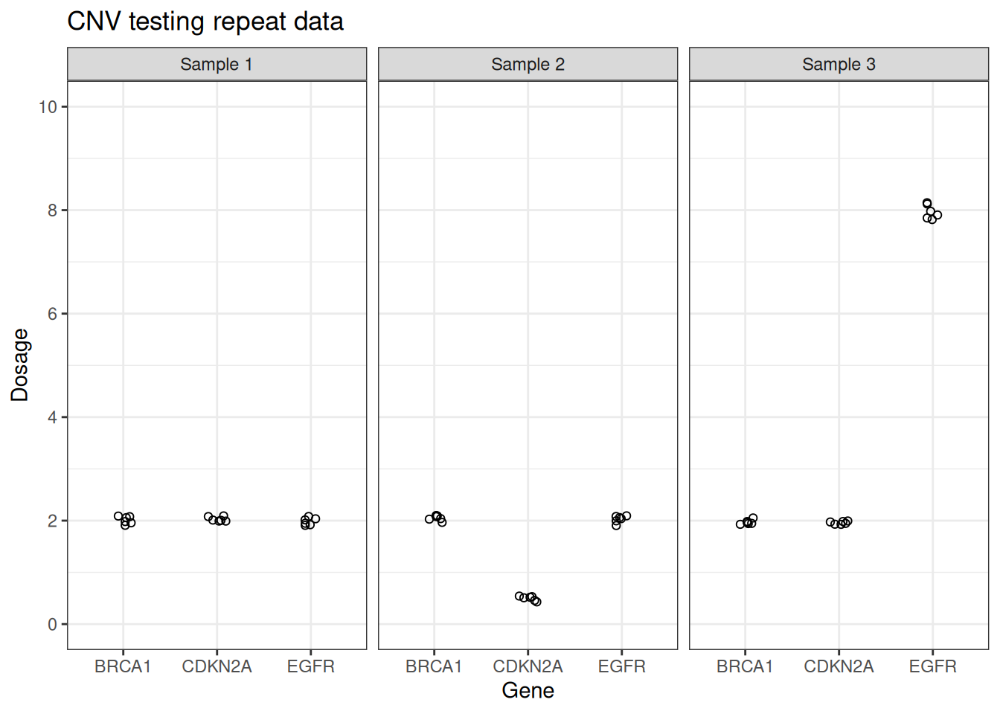

head(data_cnv)
#> sample replicate gene dosage
#> 1 Sample 1 1 BRCA1 1.957516
#> 2 Sample 1 2 BRCA1 2.057661
#> 3 Sample 1 3 BRCA1 1.981795
#> 4 Sample 1 4 BRCA1 2.076603
#> 5 Sample 1 5 BRCA1 2.088093
#> 6 Sample 1 6 BRCA1 1.909111Quantifying assay variation
uncertain contains fake datasets to help with calculating assay variation. For example, data_cnv includes made-up data for an assay which measures the dosage of 3 genes (BRCA1, CDKN2A and EGFR) for 3 samples, each of which has been tested 6 times.

A key aspect of assay development is determining the variability within the assay. uncertain contains the group_stats function which calculates the statistical variation within a dataset based on groupings supplied by the user.
knitr::kable(group_stats(data_cnv,
measurement_variable = dosage,
sample, gene)[[1]])| sample | gene | mean | standard_deviation | conf_int_95_min | conf_int_95_max | replicates | degrees_freedom | sum_squares | standard_error |
|---|---|---|---|---|---|---|---|---|---|
| Sample 1 | BRCA1 | 2.0117967 | 0.0728223 | 1.9353743 | 2.0882191 | 6 | 5 | 0.0265155 | 0.0297296 |
| Sample 1 | CDKN2A | 2.0279581 | 0.0449833 | 1.9807510 | 2.0751651 | 6 | 5 | 0.0101175 | 0.0183643 |
| Sample 1 | EGFR | 1.9847034 | 0.0689010 | 1.9123962 | 2.0570105 | 6 | 5 | 0.0237367 | 0.0281287 |
| Sample 2 | BRCA1 | 2.0499848 | 0.0501495 | 1.9973561 | 2.1026135 | 6 | 5 | 0.0125749 | 0.0204735 |
| Sample 2 | CDKN2A | 0.4979573 | 0.0444423 | 0.4513179 | 0.5445966 | 6 | 5 | 0.0098756 | 0.0181435 |
| Sample 2 | EGFR | 2.0284635 | 0.0695623 | 1.9554623 | 2.1014647 | 6 | 5 | 0.0241946 | 0.0283987 |
| Sample 3 | BRCA1 | 1.9694007 | 0.0444302 | 1.9227741 | 2.0160273 | 6 | 5 | 0.0098702 | 0.0181385 |
| Sample 3 | CDKN2A | 1.9590939 | 0.0279047 | 1.9298098 | 1.9883781 | 6 | 5 | 0.0038934 | 0.0113920 |
| Sample 3 | EGFR | 7.9688437 | 0.1372104 | 7.8248502 | 8.1128372 | 6 | 5 | 0.0941335 | 0.0560159 |
group_stats also calculates the pooled standard deviation across all the sample groupings, which quantifies the overall variation within the assay itself.
group_stats(data_cnv,
measurement_variable = dosage,
sample, gene)[[2]]
#> [1] 0.06910729The grouping step is very important. If the data are not grouped at the gene level, then biological variation is misinterpreted as assay variation. For example, the CDKN2A deletion within sample 2 and the EGFR amplification within sample 3 leads to higher standard deviations calculated for these samples compared to sample 1, and the pooled standard deviation is higher.
knitr::kable(group_stats(data_cnv,
measurement_variable = dosage,
sample)[[1]])| sample | mean | standard_deviation | conf_int_95_min | conf_int_95_max | replicates | degrees_freedom | sum_squares | standard_error |
|---|---|---|---|---|---|---|---|---|
| Sample 1 | 2.008153 | 0.0623567 | 1.977143 | 2.039162 | 18 | 17 | 0.0661021 | 0.0146976 |
| Sample 2 | 1.525468 | 0.7495116 | 1.152745 | 1.898192 | 18 | 17 | 9.5500492 | 0.1766616 |
| Sample 3 | 3.965779 | 2.9137496 | 2.516806 | 5.414753 | 18 | 17 | 144.3289282 | 0.6867774 |
group_stats(data_cnv,
measurement_variable = dosage,
sample)[[2]]
#> [1] 1.737392